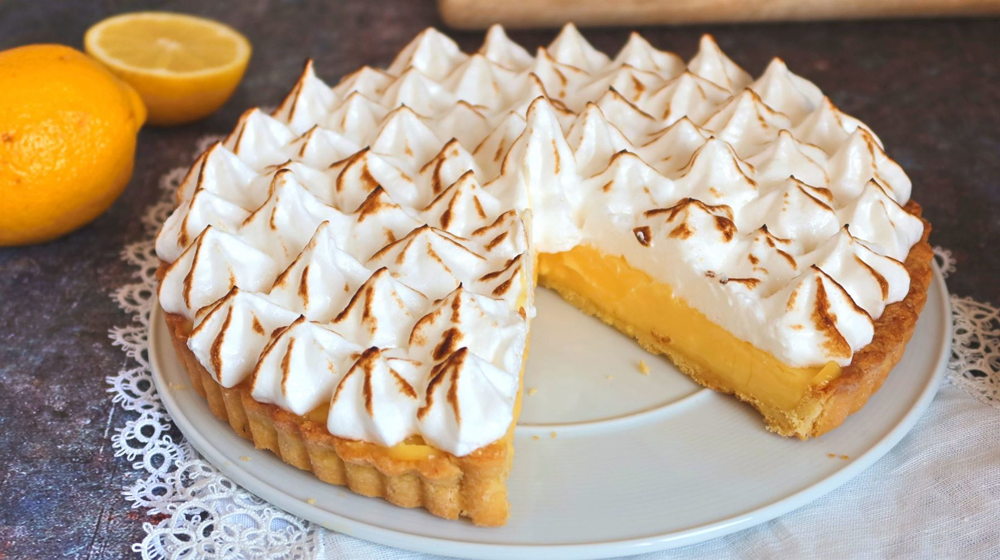

Blend sweetened condensed milk and egg yolks together. Gradually add lemon juice, stirring until mixture thickens and is well blended. Pour filling into crust.
In another bowl, beat room temperature egg whites with cream of tartar until foamy. Gradually add sugar, and continue beating until egg whites are stiff. Carefully spread meringue over filling, sealing the edges.
Bake at 400 degrees F (205 degrees C) until meringue browns, about 6 minutes. Cool. Refrigerate uneaten portions.
